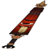
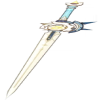
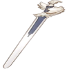

|
Luz Lunar de Xiphos |
42.4 |
510 |
Bonus EM |
36.0 |
165.38 |
Os seguintes efeitos serão desencadeados a cada 10s: o personagem com esta arma equipada terá sua Recarga de Energia aumentada em 0.036-0.072% para cada ponto de Proficiência Elemental que ele possuir, com os membros da equipe próximos ganhando 30% desse bônus, esses efeitos duram 12s. É possível acumular esse efeito ao equipar vários exemplares desta arma. Esse efeito será desencadeado mesmo que o personagem não esteja ativo no campo de batalha. |
|  |
Chuva Floral |
42.4 |
510 |
Bonus EM |
36.0 |
165 |
Ao atingir os inimigos com um ataque, aplicará o estado de "Assombração do Guarda-Chuva" em um inimigo por 10s. Esse efeito pode ser desencadeado uma vez a cada 15s; caso esse inimigo seja derrotado na duração do efeito, redefinirá o tempo de recarga dele. Personagens com esta arma equipada causam 16-32% a mais de Dano contra inimigos no estado "Assombração do Guarda-Chuva". |
|  |
Espinho de Ferro |
42.4 |
510 |
Bonus EM |
36 |
165 |
Após causar Dano Elemental, aumenta todos os Danos em 6-12% por 6s. Este efeito pode acumular até 2 vezes e pode ser ativado uma vez a cada 1s. |
|  |
Espada de Favonius |
41.07 |
454.36 |
Bonus ER% |
13.33% |
61.25% |
Os Acertos Críticos possuem 60-100% de chance de gerar Partícula Elemental, que irá regenerar 6 de Energia para o Personagem. Pode ocorrer uma vez a cada 12-6s. |